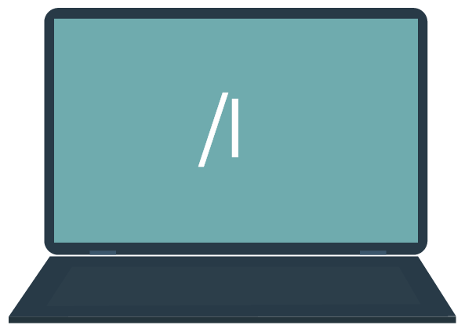
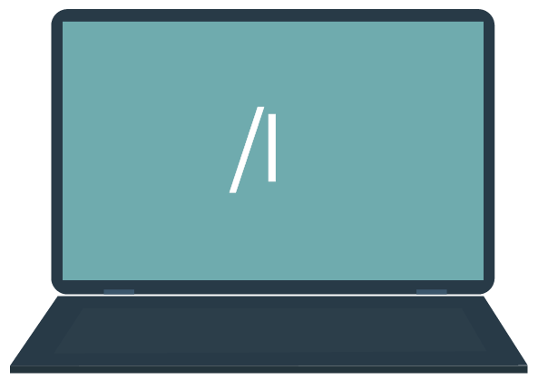

- Transacciones para navegar
-
Una transacción es un nombre o código único que se asigna a un programa ABAP y se utiliza para la ejecución de este. Puede ser de dos tipos:
..Las transacciones técnicas más comunes y utilizadas por un consultor ABAP son:
ToqueHaga clic en cada nombre para leer su descripciónSE80 Navegador de objetos:
sirve para crear, modificar y visualizar los objetos técnicos ABAP, tales como programas, paquetes, clases, servicios web, módulos de funciones, entre otros.
SE38 Editor ABAP:
sirve para crear, modificar y visualizar programas ABAP.
SE93 Mantenimiento de transacciones:
sirve para crear, modificar y visualizar transacciones.
SE11 Diccionario ABAP:
sirve para crear, modificar y visualizar los objetos centrales y globales del sistema SAP, tales como tablas de base de datos, vistas, elementos de datos, estructuras, dominios, entre otros.
SE16N Visor de tablas de base de datos:
sirve para visualizar los datos almacenados en las tablas que componen la base de datos.
Ingrese a su sistema SAP, ejecute las transacciones mencionadas y navegue por las opciones para que empiece a reconocerlas.
- Ayudas al sistema
-
Tiene disponible varias ayudas en la entrada de las transacciones de SAP. Así funcionan algunas ayudas importantes:
ToqueHaga clic en cada tecla para leer su descripciónF1
SAP tiene disponible documentación de ayuda en casi todas las transacciones y campos del sistema. Solo debe situar el cursor sobre el campo a consultar y teclear F1. Las ayudas pueden ser muy simples, desde el nombre completo de un campo o la descripción técnica de una sentencia, hasta extensas explicaciones sobre el uso y configuración de un proceso. Veamos cómo se comportan las ayudas en la siguiente imagen:
ToquePase el mouse por cada apuntador para leer su información123456F4
Es la ayuda de búsqueda que se utiliza en las pantallas de las transacciones y sirve para buscar posibles valores de un campo.
Si quiere encontrar el código numérico de un proveedor, puede buscar por nombre, país, ciudad o código postal.
Veamos una aplicación específica: ¿Cómo buscar todas las tablas personalizadas (creadas por la organización)?
ToquePase el mouse por cada apuntador para leer su información123
- Comandos
-
Estos comandos permiten navegar de forma fácil y rápida en SAP.
/N
Para cancelar la transacción en curso.

/Nxxxx
Para llamar la transacción xxxx directamente desde otra transacción. Sin el prefijo solo se puede llamar xxxx desde la pantalla SAP Easy Access.

/o
Para visualizar el resumen de las sesiones de SAP GUI en su ordenador.

/oxxxx
Para llamar la transacción xxxx en una ventana nueva.
/NEND
Para finalizar la sesión con una ventana de diálogo de confirmación.

/NEX
Para finalizar la sesión sin una ventana de diálogo de confirmación.
 
/l
Para borrar la ventana que se está utilizando actualmente.
Ahora te invitamos a realizar las siguientes actividades que te permitirán validar los contenidos abordados. Es importante leer con atención las instrucciones para resolverlas correctamente.
Objetivo de aprendizaje: identificar conceptos importantes a tener en cuenta en la navegación en SAP.
Indicaciones: para cada enunciado, seleccione si es correcto o incorrecto según los temas estudiados.
F1 se usa en las pantallas de las transacciones
- Correcto
- Incorrecto
F1 sirve para buscar posibles valores de un campo
- Correcto
- Incorrecto
F4 ayuda con la descripción técnica de una sentencia
- Correcto
- Incorrecto
F1 ofrece explicaciones la configuración de un proceso
- Correcto
- Incorrecto
En el menú SAP se pueden agregar carpetas y direcciones web de uso frecuente
- Correcto
- Incorrecto
En el menú SAP se encuentran los elementos necesarios para ejecutar transacciones
- Correcto
- Incorrecto
Transacción Estándar viene instalada en el sistema e inicia con una letra Y o Z
- Correcto
- Incorrecto
Objetivo de aprendizaje: aplicar el uso correcto de los comandos de navegación en SAP.
Enunciado: dada una situación específica, escriba el comando que resuelve la situación.
Situación
Me encuentro en la ventana de xxxx y necesito borrarla porque ya no la voy a utilizar más.
El comando para resolver esta situación es
Situación
Ejecuté la transacción SE16N para visualizar los datos almacenados en una tabla de base de datos pero me he percatado de que debo ejecutar previamente otra transacción, la cual está agregada en mi Menú Favoritos de la SAP Easy Screen. ¿Cómo puedo ir directamente a la SAP Easy Screen utilizando un comando?
El comando para resolver esta situación es
Situación
Estoy en la transacción SE38 y terminé de modificar programa tipo Module Pool, ahora necesito ejecutar la transacción SE80 para modificar un servicio web. ¿Cómo puedo ejecutar la transacción SE80 de una forma simple y sin necesidad de abrir una nueva ventana?
He finalizado la revisión y activación de todos los objetos ABAP de un paquete propio en la transacción SE80 y ya debo continuar con la gestión de su transporte al sistema de pruebas (QAS). ¿Cómo puedo ejecutar la transacción SE10 de una forma simple y sin necesidad de abrir una nueva ventana?.
El comando para resolver esta situación es
Situación
Estoy trabajando en varias transacciones de forma paralela y ya tengo 6 ventanas abiertas, en este punto, quiero validar que no esté ejecutando transacciones repetidas. ¿Cómo puedo obtener un resumen rápido de las transacciones que estoy ejecutando actualmente?.
El comando para resolver esta situación es
Situación
Estoy en la transacción SE93 creando una transacción propia para un programa, pero no recuerdo el nombre completo de este, por lo tanto, debo ejecutar la transacción SE38 para obtenerlo.¿Cómo puedo ejecutar la transacción SE38 sin tener que cerrar la ventana actual?
Por medio de una vista de base de datos estoy parametrizando todos los datos de configuración del nuevo programa de validación de pedidos de compra, y un compañero me pide que verifique en la transacción SM37 si un JOB finalizó correctamente. ¿Cómo puedo ejecutar la transacción SM37 sin perder el trabajo que llevo?.
El comando para resolver esta situación es
Situación
Estoy trabajando en un proyecto de desarrollo que incluye la modificación de los siguientes objetos ABAP: 1 programa tipo ejecutable, 2 tablas de base de datos y 1 transacción. Justo es la hora de salida y debo cerrar el sistema SAP. ¿Cómo puedo hacerlo rápidamente y asegurando que no pierda ningún cambio realizado?.
El comando para resolver esta situación es
Situación
Estoy ejecutando únicamente la transacción SE38 para visualizar el código de un programa estándar de SAP y así entender su funcionamiento. Repentinamente, mi sistema operativo requiere que instale algunas actualizaciones, así que necesito cerrar el sistema SAP. ¿Cómo puedo hacerlo rápidamente y asegurando que no pierda ningún cambio realizado?
El comando para resolver esta situación es
Situación
Estoy en la transacción SE11 y ya terminé de crear los dominios y elementos de datos necesarios para la creación de una tabla de base de datos propia. ¿Cómo puedo cerrar únicamente la ventana de la transacción SE11?